20101224
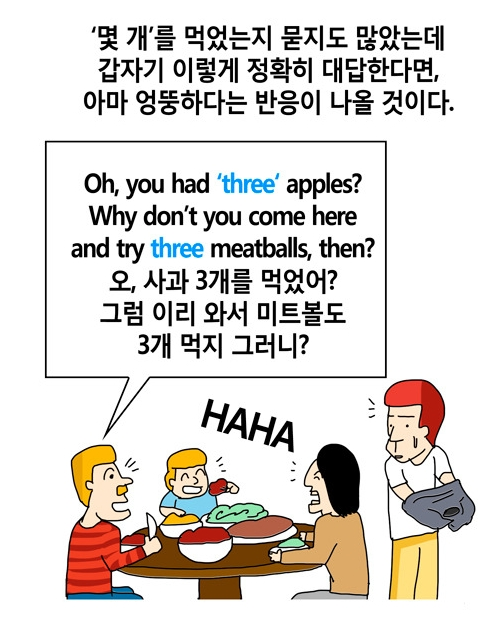 http://puwazaza.com/20520101222
20101212
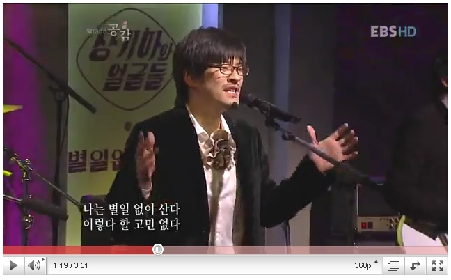 http://www.youtube.com/watch?v=VhywfkUoppQ&feature=related20101202
Daum http://icon.daum-img.net/top/2010v2/logo.gif
Teamviewer http://macin.files.wordpress.com/2008/10/teamviewer-icon.png
http://static.springsource.org/spring-batch/1.1.x/spring-batch-docs/reference/html-single/images/spring-batch-reference-model.png
http://www.octeo.it/images/peritor_theme/webistrano_logo_large.png?128494114020101129
http://andrewsullivan.theatlantic.com/.a/6a00d83451c45669e20134892d3011970c-550wi
http://media.tumblr.com/tumblr_l83wg2my8d1qa8y6t.gif
20101124
바지락 Manila Clam, Littleneck Clam, Shortnek Clam 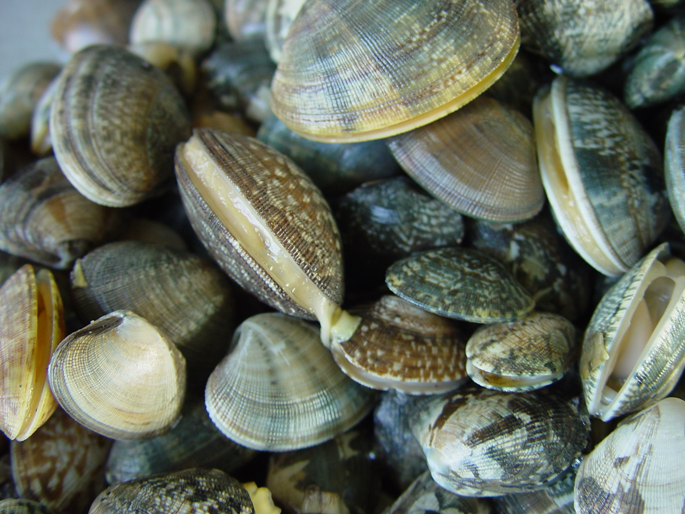 http://chamsil.eduhope.net/subgroup/konect/data/konect_8_12/photo/5/149/DSC07279.JPG20101123
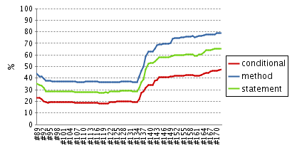20101122
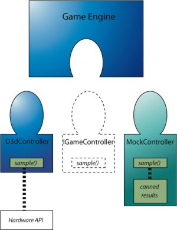 http://gamesfromwithin.com/backwards-is-forward-making-better-games-with-test-driven-development http://www.gamesfromwithin.com/wp-content/uploads/old_images/46_tdd_gdc/mock.jpg20100924
public int hashCode() { return HashCodeBuilder.reflectionHashCode(this); } public boolean equals(Object obj) { return EqualsBuilder.reflectionEquals(this, obj); } public String toString() { return ToStringBuilder.reflectionToString(this); } public int compareTo(Object obj) { return CompareToBuilder.reflectionCompare(this, obj); } http://mckdh.net/436 http://www.ibm.com/developerworks/kr/library/tutorial/j-lessismore/index.html20100922
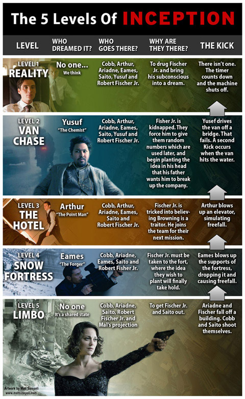 http://dpimage.dreamwiz.com/201007/20100721224732078.jpg http://movie.naver.com/movie/board/review/read.nhn?nid=2235644&code=5251520100911
Add the new menu to the context menu. 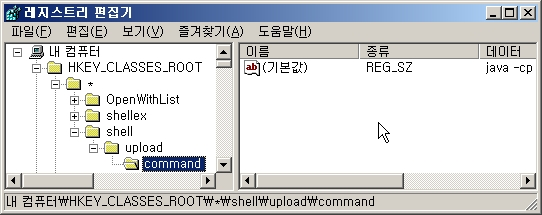 Well you done done me and you bet I felt it I tried to be chill but you're so hot that I melted I fell right through the cracks Now I'm trying to get back Before the cool done run out I'll be giving it my bestest And nothing's going to stop me but divine intervention I reckon it's again my turn to win some or learn some But I won't hesitate no more, no more It cannot wait, I'm yours Well open up your mind and see like me Open up your plans and damn you're free Look into your heart and you'll find love love love love Listen to the music of the moment people dance and sing Were just 1 big family And It's our God-forsaken right to be loved love loved love loved So I won't hesitate no more, no more It cannot wait I'm sure There's no need to complicate Our time is short This is our fate, I'm yours Scooch on over closer dear And i will nibble your ear I've been spending way too long checking my tongue in the mirror And bending over backwards just to try to see it clearer But my breath fogged up the glass And so I drew a new face and laughed I guess what I'm be saying is there ain't no better reason To rid yourself of vanity and just go with the seasons It's what we aim to do Our name is our virtue But I won't hesitate no more, no more It cannot wait I'm yours Well open up your mind and see like me Open up your plans and damn you're free Look into your heart and you'll find that the sky is yours Please don't, please don't, please don't There's no need to complicate Cause our time is short This oh this this is out fate, I'm yours!20100908
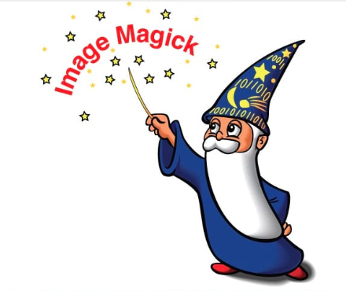 이건 뭐, 두말할 것도 없이 매직이네... 할배요 고맙습니다. It's crazy powerful. Thanks, IM GrandFa.20100814
20100813
Code Coverage
20100804
IO Redirection
| Common Name | Standard In | Standard Out | Standard Error |
| Short Name | stdin | stdout | stderr |
| Assumed Redirector | < | > | 2> |
| Explicit Redirection | 0< | 1> | 2> |
| File Descriptor | &0 | &1 | &2 |
20100715
Facebull
http://www.youtube.com/watch?v=_Chb6TpGBqg http://www.facebook.com/careers/puzzles.php?puzzle_id=1 http://blogs.sun.com/augustus/entry/facebull_problem_definition20100713
Clique
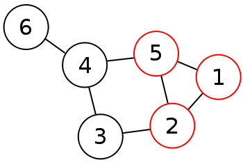 http://en.wikipedia.org/wiki/File:6n-graf-clique.svg http://www.ibluemojo.com/school/clique_algorithm.html http://en.wikipedia.org/wiki/Bron%E2%80%93Kerbosch_algorithm http://www.dfki.de/~neumann/ie-seminar/presentations/finding_cliques.pdf http://citeseerx.ist.psu.edu/viewdoc/download?doi=10.1.1.95.358&rep=rep1&type=pdf http://stackoverflow.com/questions/3171063/java-recursion-calling-it-with-objects-how-to-copy-the-objectshttp://www.ibluemojo.com/videos.html#
20100711
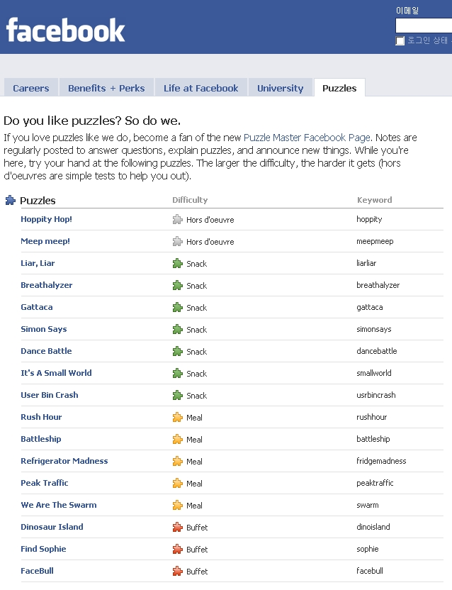 http://www.facebook.com/careers/puzzles.php20100704
20100623
20100622
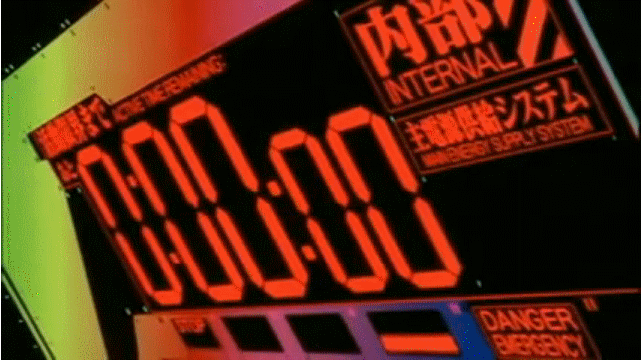20100619
천둥산 박달재를 울고넘는 우리님아 물항라 저고리가 궂은비에 젖는구려 왕거미 집을짓는 고개마다 구비마다 울었오 소리쳤오 이가슴이 터지도록 부엉이 우는산골 나를두고 가는님아 돌아올 기약이나 성황님께 빌고가소 도토리 묵을싸서 허리춤에 달아주며 한사코 우는구나 박달재의 금봉이야 박달재 하늘고개 울고넘는 눈물고개 돌뿌리 걷어차며 돌아서는 이별길아 도라지 꽃이피는 고개마다 구비마다 금봉아 불러보나 산울림만 외롭구나 http://kin.naver.com/qna/detail.nhn?d1id=6&dirId=613&docId=61063522&qb=7Jq46rOg64SY64qUIOuwleuLrOyerA==&enc=utf8§ion=kin&rank=1&sort=0&spq=1&pid=gtyBtsoi5TVssbwtMUCsss--438258&sid=TByhyDuHHEwAAEC8FcE20100615
To me, Test is the beginning and end of all program.
테스트는 모든 프로그램의 시작이며 끝이다.
Bach is the beginning and end of all music. - Max Reger
20100614
http://puwazaza.com/12920100611
20100609
20100601
꽈리고추재배2급Cherry Pepper
http://www.womansday.com/var/ezflow_site/storage/images/media/images/09-wd0709-cherry/656441-1-eng-US/09-wd0709-cherry.jpghttp://www.rustywalrus.com/images/lg/am.jpg
20100524
http://www.sculptris.com20100518
http://reino.egloos.com/1708146
Laziness, Impatience, Hubris
"We will encourage you to develop the three great virtues of a programmer: laziness, impatience, and hubris." http://en.wikipedia.org/wiki/Larry_Wall http://c2.com/cgi/wiki?LazinessImpatienceHubris http://stackoverflow.com/questions/58640/great-programming-quotes20100517
I felt like I was mostly gluing together libraries that other people had written.
http://stackoverflow.com/questions/2823571/im-graduating-with-a-computer-science-degree-but-i-dont-feel-like-i-know-how-to20100514
Carrot Cat http://www.forkparty.com/wp-content/uploads/2010/03/carrots-cat.jpg대충 기획하고 대충 만들어 대충 테스트하고 대충 서비스한 뒤 아 이게 아닌가 보다하고 없애버린다. 미안하다.
It's only just begun.
What is iPad? iPad is thin. iPad is beautiful. iPad goes anywhere and lasts all day. There’s no right way or wrong way. It’s crazy powerful. It’s magical. You already know how to use it. It’s 200,000 apps and counting. All the world’s websites in your hand. It’s video, photos, more books than you can read in a lifetime. It’s already a revolution and its only just begun.20100510
Tumbleweed 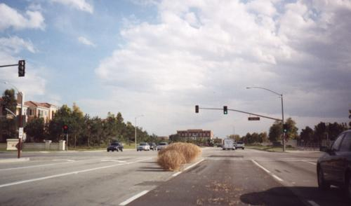 http://www.hyperborea.org/journal/images/tumbleweed_at_harvard.jpg20100430
시스템은 언제나 설계자의 예상을 벗어난다! http://ukja.tistory.com/31120100428
어제 왔다가 오늘 놀다 내일 가네20100427
20100422
Neo, sooner or later you're going to realize, just as I did,
that there's a difference between knowing the path and walking the path.
20100420
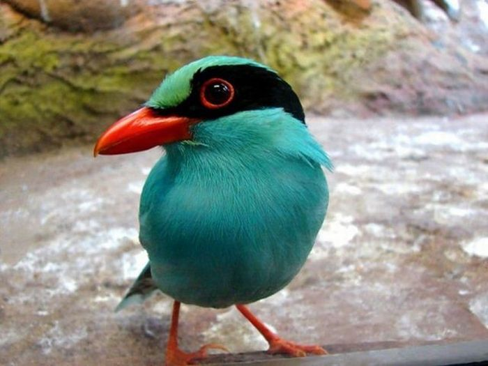20100414
20100413
This is your _last chance_. After this, there is no turning back.....You take the blue pill, the story ends. You wake up and belive...whatever you want to believe. You take the red pill.....you stay in wonderland...and I show you just how deep the rabbit hole goes. http://dc-mrg.english.ucsb.edu/WarnerTeach/E192/matrix/Matrix.script.html20100403
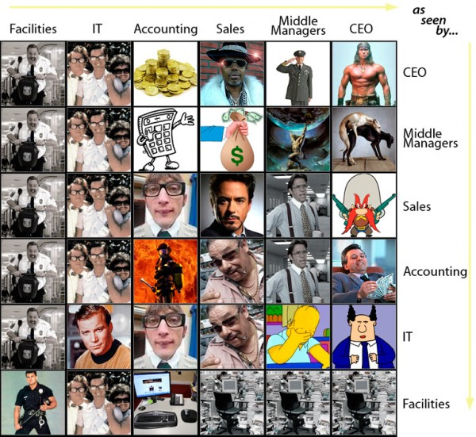 http://www.businesspundit.com/how-do-you-see-your-colleagues/ 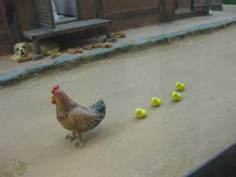20100323
http://monk3y.tumblr.com/post/465109207/turquoisebird-this-deserves-a-fuck-yeah20100319
Plants And Zombies
20100317
20100316
LOW PASS FLYBY'S
20100312
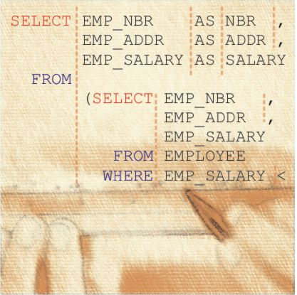 http://www.sqlinform.com/images/splah03.jpg20100311
http://www.mediaus.co.kr/news/photo/200911/8453_13640_4412.jpg http://i104.photobucket.com/albums/m179/pinguy1982/thichquangducselfimmolade7.jpg20100309
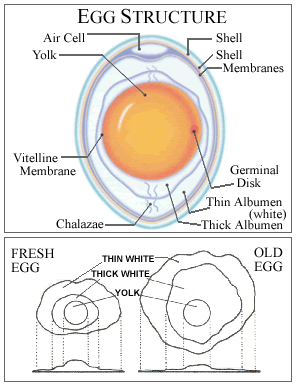 http://www.eggs.ab.ca/about/images/eggstructure2.gif20100308
http://hudson.zones.apache.org/hudson/job/Solr-trunk/20100303
Morphology 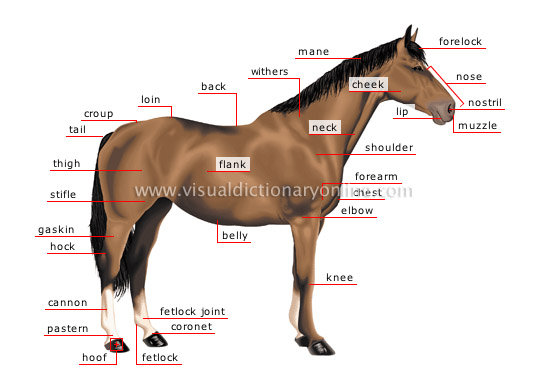 http://visual.merriam-webster.com/images/animal-kingdom/ungulate-mammals/horse/morphology-horse.jpg http://ru.fishki.net/picsw/032010/02/pics/photopodborka_074..jpg20100301
http://ru.fishki.net/picsw/032010/01/pics/photopodborka_089..jpg http://lifehacker.com/5481921/the-day-traders-paradise20100223
http://www.bloter.net/wp-content/bloter_html/2010/02/26178.html20100222
http://developer.android.com/assets/images/home/Android_Dev_Lab_l.png20100219
http://ffffound.com/image/d5df415fa9e36c9706886d7ea0f83731ba483dc420100218
조립중... assembling... tomcat6 + spring2.5 + ibatis2.3.4 + tiles2 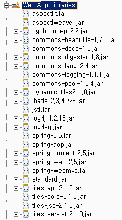몇 년째 듣고 있는데 노랜데, 이거 정말 신기하네...